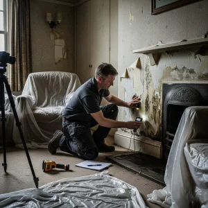
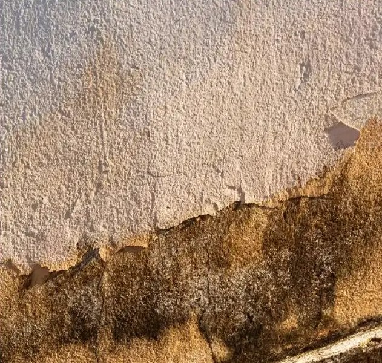
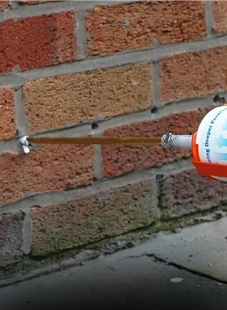
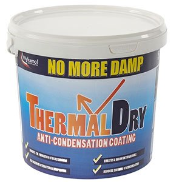
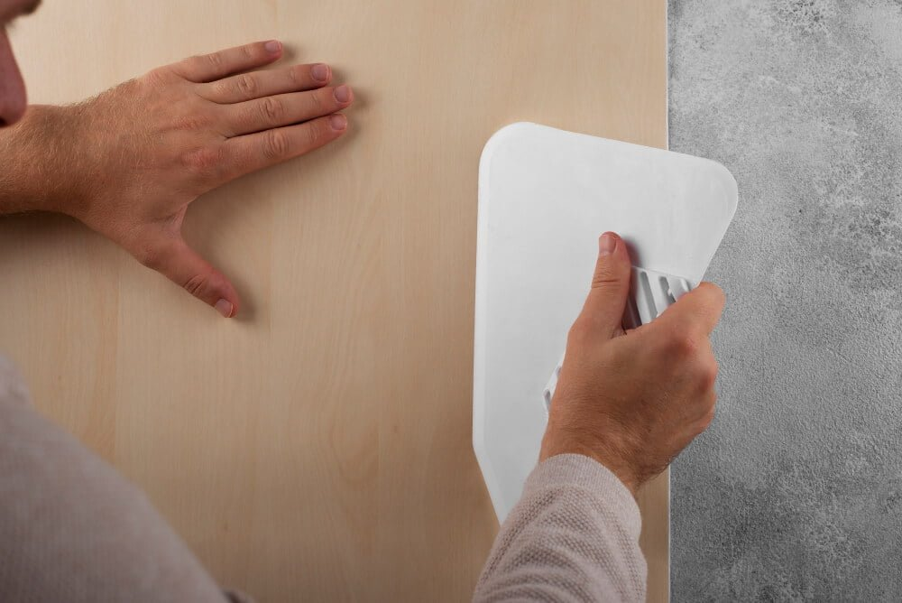

Protection that starts beneath the surface.


 Insurance-backed guarantee available
Insurance-backed guarantee availableMeasured first, named second
Thorough inspection using specialist moisture detection.

Readings at several heights, photographs of what we find and a check of the external ground level. Nothing is called rising damp before the meter says so.
Identify the source and provide clear, honest findings.

Rising damp, penetrating damp and condensation each need a different fix. You get the cause named in writing, with the evidence behind it.
Expert treatment using proven, lasting solutions.

Survey, treatment, rendering and plastering all handled by our own teams. We work room by room, sheet the area and clear up daily.
Ongoing support to keep your home protected.

Guarantee paperwork lodged for you, and the surveyor who specified the work stays your point of contact for the life of the cover.
Damp control, waterproofing and timber preservation
Twelve specialisms under one roof, so the survey is never steered toward the one treatment we happen to sell.
Damp
01- Damp surveysMoisture readings, photographs and a written order of work.
- Rising dampGroundwater drawn up through masonry, stopped at the source.

DPC injectionA new damp-proof course injected into the mortar bed.- Penetrating dampWater tracking in through failed pointing, render or gutters.
 Rising damp
Rising dampWaterproofing
02- Basement waterproofingCavity drainage systems that turn a cellar into a usable room.
- Waterproof tankingWalls and floors sealed against water below ground level.
- Slurry coatsCementitious coatings for below-ground and retaining walls.
- Cavity wall insulationCut heat loss and the cold surfaces condensation forms on.
 Basement waterproofing
Basement waterproofing Cavity wall insulation
Cavity wall insulationTimber & air
03- Woodworm & timberTreat active infestation and protect the timber left behind.
- Wet & dry rotTrace the moisture, cut out decay, treat what surrounds it.
- Air bricks & subfloorRestore underfloor airflow where vents are blocked or buried.
- Condensation & mouldVentilation and coatings for moisture the household makes.
 Wet & dry rot
Wet & dry rot Air bricks & subfloor
Air bricks & subfloorProven systems. Premium protection.
Specified from the survey, not from a van stock list. Six of the systems we fit most often.

Surface damp-proof membrane for walls and floors.

Water-based epoxy for damp or green screeds.

Breathable water repellent for exposed elevations.

Repels driving rain without sealing the wall.

Warms the wall surface so moisture stops settling.

Kills the growth and treats the surface behind it.
Why homeowners choose us.
Salaried surveyors
Our surveyors are paid a salary, not commission, so there is nothing to gain by writing up work you do not need.
Diagnosis before quote
Rising damp, penetrating damp and condensation look alike. We measure first and tell you which one you actually have.
Company-backed guarantee
Ten to thirty years depending on the system, covering both workmanship and materials.
Accredited specialists
PCA and TrustMark registered, with Constructionline and SafeContractor accreditation for commercial work.
One trade, start to finish
Survey, treatment, rendering and plastering handled by our own teams rather than subcontracted out.
Ongoing aftercare
Guarantee paperwork lodged for you, and the surveyor who specified the work stays your point of contact.
Recent work. Real results.




Rated 4.9 out of 5 by the homes we dried out
Independently verified reviews from homeowners across Hertfordshire, Bedfordshire, Essex and Greater London.
“They tanked the cellar so we could finally put the laundry down there. Bone dry through the whole of the winter.”
Sarah & JamesSt Albans“The survey report was thorough and readable. Photographs, moisture readings and a clear order of work.”
Michael T.Watford“Injected the course, rendered and replastered, and left the house spotless. Two winters on and the wall is still dry.”
Angela P.Hertford“Three companies quoted. They were the only ones who took moisture readings rather than just looking at the stain.”
Dan and Hayley R.Enfield“Told us honestly that our problem was condensation, not rising damp, and fitted ventilation instead of selling us a damp course.”
Priya S.Hitchin“The chimney breast had stained through twice before. They traced it to the flashing and treated the wall properly.”
Gordon M.Barnet“Timber treatment done room by room so we could stay in the house throughout. Very considerate team.”
Elaine W.Stevenage“Guarantee paperwork arrived within the week, properly lodged. No chasing required.”
Tom H.ChelmsfordZero risk. Total peace of mind.
Every treatment carries a company-backed guarantee: twenty years as standard, and up to thirty depending on the system specified.
Frequently asked questions.
01What causes damp in my home?
Three different things, and each needs a different fix. Rising damp draws groundwater up through the masonry where the damp-proof course has failed. Penetrating damp comes in from outside through failed pointing, a leaking gutter or a raised ground level. Condensation is moisture your household produces that cannot escape. We measure before we name it.
02How do I know if I have rising damp?
A tide mark about a metre up the wall with salt bloom above it is the classic sign, but it is not proof. Penetrating damp and condensation both mimic it. A survey takes readings at several heights and checks the external ground level before anything is called rising damp.
03What does a damp survey cost?
A survey typically runs between £200 and £600 depending on the size of the property and how much of it needs investigating. What you get for it is moisture readings, photographs, the cause identified and a written order of work, not a single-page quote.
04What will the treatment itself cost?
Most domestic damp-proofing falls between £1,000 and £3,000. A single wall sits at the lower end; a whole ground floor with rendering and replastering, or a basement system with drainage, sits well above it. Nobody can price it honestly before the survey.
05How long will the work last?
A properly installed damp-proof course that is looked after has a working life of roughly twenty to fifty years. What shortens it is the thing nobody looks at afterwards: a raised flower bed, a blocked airbrick, a gutter running down the wall.
06What does the guarantee actually cover?
Workmanship and materials, for between ten and thirty years depending on the system specified. It is company-backed and transfers to a new owner if you sell, which matters more than most people expect at the point of sale.
07Is damp covered by home insurance?
Usually not. Insurers treat damp as gradual deterioration and a maintenance matter, so it falls outside most policies. A sudden escape of water is a different question and often is covered, so it is worth checking your wording before you assume either way.
08Can I treat damp myself?
Injection creams are sold to the public, so physically yes. The failure is almost never the injection though. It is diagnosing the wrong problem and treating a wall that was never rising damp. DIY work also carries no guarantee, which surveyors and buyers will ask about.
09Does it have to be done from inside?
Not always. A damp course can be injected from either face, and the choice is usually driven by access, whether the plaster is already failing and what the wall is built from. We will tell you which side we intend to work from, and why, at survey.
10How long does treatment take?
A single wall is usually one to two days including replastering. A full basement system runs to a week or more depending on area and drainage. We work room by room, sheet the area and clear up daily, so most customers stay in the property throughout.
Let's get your home dry.
Rising damp, a wet cellar, blown plaster or timber that needs treating, the first step is the same. A survey that measures what is actually happening, and findings you get in writing before anything is agreed.
01632 960 300